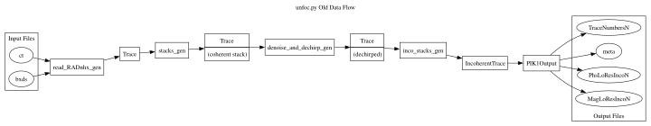

Usage Guide
This guide demonstrates how to use the unfoc radar processing package, covering input formats,
script-based usage, Python module usage, and step-by-step advanced usage with comments and examples.

1. Input and Output Format
Input:
The primary input is a bxds file (e.g., generated by breakout_elsa) and an associated ct or ct.gz
metadata file containing ELSA CT information such as timestamps and sequence numbers.
Supported radar types include:
RADnh3
RADnh5
RADjh1 (
bxds1,bxds2)
For radar channel details, please see multipol_data_format (PDF).
Output:
The pulse-compressed outputs include:
MagLoResIncoN: Binary radar magnitude, scaled (default: 1000 × dB)
PhsLoResIncoN: Binary radar phase, scaled by
2^24TraceNumbersN: Text file of the sequence numbers used
Each trace typically contains 3200 samples.
2. Script Usage
You can invoke the processor directly from the command line or call it programmatically from Python.
Command Line:
run_unfoc.py -i /path/to/bxds -o /tmp/outdir \
--stackdepth 10 --incodepth 5 \
--channels LoResInco1,LoResInco2
To run each output channel on a separate core:
run_unfoc.py -i /path/to/bxds -o /tmp/outdir \
--stackdepth 10 --incodepth 5 \
--channels LoResInco1,LoResInco2 -j 2
3. Python API
from unfoc import unfoc
channels = 'LoResInco1,LoResInco2'
infile = '/path/to/bxds'
unfoc(infile=infile, outdir='/tmp/outdir',
stackdepth=10, incodepth=5,
channels=channels, processes=2)
Using readers for data ingest
The unfoc module provides several ways to read raw radar data from the RADnh3 and RADnh5 data streams.
The RadBxds class automatically detects RADnh3 and RADnh5 streams.
A separate class RADjh1Bxds can be used with RADjh1 data. At some point
these classes will be combined to seamlessly detect data type.
The RadBxds and RADjh1Bxds classes are the simplest to use, but
they require some preprocessing to read the radargram.
4. Implementation of Unfocused Processing
This section illustrates how the unfoc function works
to process one channel of data. It uses a pipeline of
generators, so that processing of large datasets is
memory-efficient.
The code is slightly simplified to illustrate main concepts. It may be slightly out-of-date from the current, complete implementation. Consult the actual source code for more up-to-date best practices.
It contains some comments that show how to export an entire intermediate numpy array for inspection/debugging. Users normally should not enable this commented-out code, because it may cause excessive memory usage.
The major parts within unfocused processing are
Reading input radar traces for a channel
Coherent stacking
Dechirping (range compression) and Fourier processing
Incoherent stacking
Writing unfocused radargram data
from unfoc import RadBxds
from unfoc import stack_coherent, chunks
from unfoc import get_ref_chirp, get_hfilter, denoise_and_dechirp
from unfoc import stack_inco_chunk, PIK1ChannelSpec, PIK1Output
stackdepth = 10 # Coherent stacking depth
incodepth = 5 # Incoherent stacking depth
channel = 1 # Raw channel number
chanout = 'LoResInco1' # PIK1 channel label
nsamples = 3200
bxds_input = '/path/to/bxds'
# Set up a reader class to read one channel from a bxds file
# rbxds1 is an object that looks a lot like a numpy array.
rbxds1 = RadBxds(bxds_input, channel=channel)
# for ii in range(0, len(rbxds1), stackdepth):
# # Read through the traces and do nothing
# block = rbxds1[ii:ii+stackdepth] # 10 traces of shape (10, 3200)
# cts = rbxds1.ct(ii:ii+stackdepth) # CT metadata
# Initialize generator to produce blocks of 10 traces
coherent_blocks = chunks(rbxds1, size=stackdepth)
stacked_traces = map(stack_coherent, coherent_blocks)
# turn this into a full array, for debugging
# stacked_traces = np.array(stacked_traces)
# Initialize Dechirping and filtering
ref_chirp = get_ref_chirp(bandpass=False, nsamp=nsamples)
ref_chirp *= get_hfilter(nsamples)
f_dechirp = lambda trace: denoise_and_dechirp(trace, ref_chirp=ref_chirp,
blanking=16, output_samples=nsamples,
do_cinterp=True)
dechirped = map(f_dechirp, stacked_traces)
# For debugging, convert into a full array
# dechirped = np.array(dechirped)
# Initialize incoherent stacking
p1cs = PIK1ChannelSpec(chanout=chanout)
inco_chunks = chunks(dechirped, size=inco_depth, incomplete=False)
inco_traces = map(lambda chunk: stack_inco_chunk(chunk, p1cs.chanout), inco_chunks)
# For debugging, convert into a full array
# inco_traces = np.array(inco_traces)
# Execute processing and write output
output_file = PIK1Output('/tmp/outdir', p1cs.chanout)
for t in inco_traces:
output_file.write(t)
In the above code, most of the code sets up generators for the processing
pipeline, and data processing does not actually occur until
the final loop (for t in inco_traces).